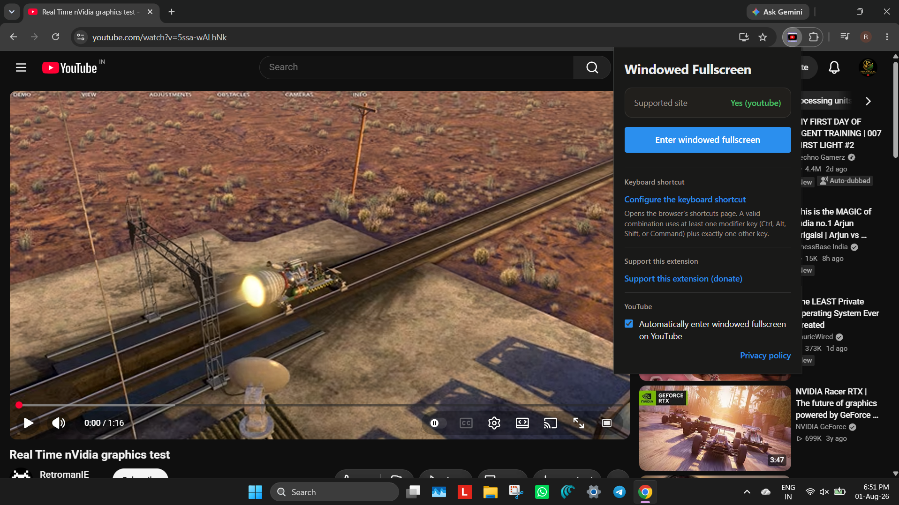

Toolbar popup
Every control in one small panel.
No separate settings page to go looking for.

Know before you click
Tells you if this site is supported.
One click to switch
No reaching down to the player.
Your own shortcut
Alt+Shift+F
, and you can change it.
Start every video this way
Switch on once and it happens by itself.